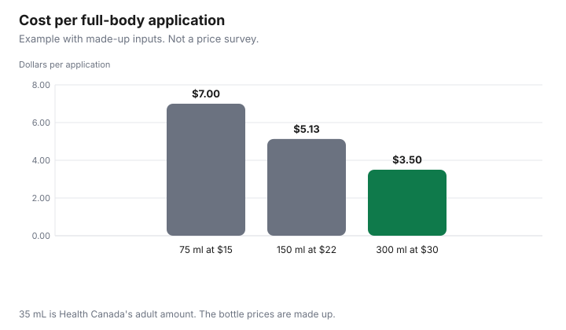

Personal Care · Canada
Sunscreen in Canada: Reading the DIN/NPN, SPF and Price per ml So You Don't Overpay
A sunscreen bottle in Canada is identified by an eight-digit drug identification number or an eight-digit natural product number, not by a claim on a foreign website. The price question is separate: price per millilitre, then price per application using the amount Health Canada tells an adult to use. This page uses Health Canada’s sunscreens page and the two product-search homepages, plus the customs pages that govern a bottle mailed from the United States. Offer types are disclosed. This is not medical advice and not a ranking of sunscreens.
Key takeaways
- Drug filters such as avobenzone or octocrylene mean an eight-digit DIN. Zinc oxide or titanium dioxide alone means an eight-digit NPN. Both kinds of filter on one bottle means a DIN.
- Health Canada says to use a broad-spectrum sunscreen with an SPF of 30 or higher, and that SPF 30 is not permission to stay out 30 times longer.
- An adult amount on that page is about 7 teaspoons (35 ml) for exposed skin. The chart turns three made-up bottle prices into a cost per that amount.
- Tariff item 3304.99.90, statistical suffix 10, is described as sunscreen preparations in the 2026 Customs Tariff, at 6.5 percent with UST free. That item is not in the United States Surtax Order (2026). Whether your bottle is classified there is a CBSA question.
- This guide does not confirm how a courier collects surtax on a small personal order. Check with CBSA (1-800-461-9999) or your carrier.
Why sunscreen is regulated as a drug or natural health product in Canada
Health Canada’s sunscreens page says sunscreens are classified as non-prescription drugs or natural health products, depending on their ingredients, and are regulated under the Food and Drugs Act and its regulations. All sunscreens approved for sale in Canada must have a DIN or an NPN.
Chemical filters absorb ultraviolet radiation. The page names avobenzone, homosalate, octocrylene, octisalate, octinoxate, and oxybenzone as examples, and says products containing one or more of them have an eight-digit DIN. Mineral filters, zinc oxide and titanium dioxide, are described as natural ingredients. A product with only those has an eight-digit NPN. A product with both kinds of filter has a DIN.
You can look a number up. The Drug Product Database search, as of 29 Sep 2026, takes a DIN and returns a record you can read for status, ingredient, and form. The Licensed Natural Health Products Database search, as of the same date, takes an NPN. A marketed status and a licence status are not the same field on the natural health products side, and the page says market status can be updated voluntarily. Do not treat a cancelled or suspended record as a bottle to buy. The store-brand medicine guide is the same DIN habit for a pain reliever. A sunscreen DIN is not that pain reliever.
Health Canada's sunscreen rules and recent updates in plain terms
The public rules cited here are the ones on the sunscreens page, not a draft monograph. Use a broad-spectrum product with an SPF of 30 or higher.
Follow the label. Reapply. The page also says homemade sunscreen is not the substitute: use a product that has a DIN or an NPN. If you need the current monograph, use Health Canada’s own monograph index and read the date on the file.
The page cited here is Health Canada's sunscreens page. Databases move. Search the number on the bottle rather than a blog summary of an approval.
SPF, broad spectrum and water resistance claims
SPF on the Health Canada page is a relative measure of how long unprotected skin takes to burn compared with skin where the recommended amount of sunscreen was used. The page says an SPF of 30 does not mean you can spend 30 times longer in the sun.
Activity, the strength of the rays, medicines, health conditions, skin type, and how much you apply all change the protection. Broad spectrum means protection from UVA and UVB. The page says UVB is the main cause of sunburn and that both UVA and UVB can increase skin-cancer risk. That sentence is their wording, not a personal risk calculation.
A “water resistant” or “sport” label means the product is formulated to stay on better in water or sweat. The same page says you still reapply after you get out of the water or after sweating heavily. Water resistance is not all-day coverage. It is not a reason to buy a smaller bottle and skip the second application.
| On the label | What the page says |
|---|---|
| DIN | Eight digits. Drug filters, or a mix of drug and mineral filters |
| NPN | Eight digits. Mineral filters only, zinc oxide or titanium dioxide |
| SPF | A relative burn-time measure if you use the recommended amount. SPF 30 is not 30 times longer in the sun |
| Broad spectrum | UVA and UVB. The page says to choose this with SPF 30 or higher |
| Water resistant or sport | Stays on better in water or sweat, and still needs reapplication after swimming or heavy sweat |
| Expiry | Use the date on the package. A database record is not a freshness date |
Price per ml: family sizes vs face sunscreens
Price per ml is the price divided by the millilitres. A family-size bottle and a small face bottle are the same division only when you will use both products for the job you are pricing.
A face bottle used only on the face should be priced per face application, not against a full-body bottle, unless you are willing to use the family bottle on your face. The Costco household guide is the bulk test for paper goods: a large size wins only if you finish it. The same test applies to a 300 ml sunscreen you will not use before the date on the bottle.
No shelf price was collected for this guide. The worksheet is an example with made-up inputs. A 75 ml bottle at $15 is $0.20 per ml. A 150 ml bottle at $22 is $22 ÷ 150 ml, which is $0.1467 per ml. A 300 ml bottle at $30 is $0.10 per ml. The face column uses 5 ml, which is one teaspoon if seven teaspoons are 35 ml. A made-up 50 ml face bottle at $16 is $3.20 per 10 ml and $1.60 per 5 ml face application. Replace every price.
| Bottle in the example | Price | Per ml | Application used | Cost per application |
|---|---|---|---|---|
| 75 ml | $15 | $0.20 | 35 ml, full body | $7.00 |
| 150 ml | $22 | $0.1467 | 35 ml, full body | $5.13 |
| 300 ml | $30 | $0.10 | 35 ml, full body | $3.50 |
| 50 ml face | $16 | $0.32 | 5 ml, face and neck only | $1.60 |
| Your bottle |
How much to use, and why underusing wastes money
Health Canada’s sunscreens page says an adult should use about 7 teaspoons (35 ml) to cover exposed skin: about 1 teaspoon for each arm, each leg, the front, the back, and the face and neck. Apply it generously and evenly before you go out, and reapply at least every 2 hours while you are exposed, and after swimming, sweating heavily, or towel drying. Using less than that amount, the page says, greatly reduces the protection.
Underusing also breaks the price. If you counted a 300 ml bottle as eight full applications and you apply half the amount, you did not get eight protected days. You got a thinner layer. The chart prices one full adult application, not a skim. Reapplication is a second 35 ml if you are covering the same skin again. Two applications in a day double the sunscreen cost of that day in this arithmetic. A carry-on limit is a different constraint. The CATSA liquids guide is what you can take through Canadian airport security. It does not change the teaspoon count at the beach.
Buying from US or overseas sites: approval and tariff issues
A listing on a US or overseas site can be a different formula, and it may not show a Canadian DIN or NPN. Health Canada’s page identifies an approved sunscreen by that number.
This guide does not cite a personal-importation rule that says a consumer may or may not bring a particular bottle in, so it does not answer “legal” with a yes or a no. Not legal advice. The trip itself, if you are crossing for other reasons, is the US trips guide. A mail-order bottle is not that trip.
If the goods are commercial or casual imports, customs still applies. The United States Surtax Order (2026), SOR/2026-186, was made 4 Sep 2026 (P.C. 2026-785). The Justice Laws consolidation, as of 29 Sep 2026, was current to 2026-09-21 and last amended on 2026-09-08. The order comes into force on 8 Sep 2026. CBSA Customs Notice 26-23, dated 7 Sep 2026, says the surtax is 15 percent, 25 percent, or 50 percent of the value for duty, depending on the schedule. The customs notice list as of the same date shows CN 26-23 as the notice for this order. CN 26-24, the later notice on that list, is about Partners in Protection, not a change to the order. No notice numbered 26-25 was on the list.
The surtax applies to goods that originate in the United States, meaning goods eligible to be marked as goods of the US. For personal importations, CN 26-23 paragraphs 14 and 15 say casual goods are considered US origin when they are marked as a good of the US, including when they are imported from a country other than the US. Goods eligible to be marked as originating in Puerto Rico, Guam, the Northern Mariana Islands, American Samoa, or the US Virgin Islands are excluded. Goods made elsewhere are not US origin for this surtax just because a US warehouse shipped them. Ordinary duty and tax can still apply. Whether a specific bottle qualifies for the US tariff treatment is a classification and origin question. Check with CBSA (1-800-461-9999) or your carrier.
Schedule 3 of the order, headed goods subject to a 50 percent surtax, includes 3303.00.00, 3304.10.00, 3304.20.00, 3304.30.00, and 3305.90.00. It does not list 3304.91 or 3304.99. Those two items also do not appear elsewhere in the order text as of 29 Sep 2026. In the 2026 Customs Tariff, chapter 33, tariff item 3304.99.90 with statistical suffix 10 is described as sunscreen preparations. The rate column prints 6.5 percent, and the preferential column includes UST free and GPT 3 percent. Heading 3304 is beauty or make-up and skin-care preparations other than medicaments, and the heading text mentions sunscreen. A sunscreen authorized as a drug may not be classified in chapter 33. Do not read this paragraph as “sunscreen is surtax-free” or “sunscreen is surtaxed.” Check with CBSA (1-800-461-9999) or your carrier.
Low-value thresholds are not a surtax exemption. CN 26-23 paragraph 9 says the surtax applies to US-origin goods including those that may be eligible for remission under the Postal Imports Remission Order or the Courier Imports Remission Order, and that surtax is applicable on shipments that fall under the de minimis thresholds. Paragraph 29 says such goods must be accounted for. Paragraph 17 says GST is calculated on the value for tax, which includes the surtax even when customs duties are remitted. CBSA’s low-value shipment page, modified 2025-11-25, and Memorandum D8-2-16, say: by mail, $20 and under is duty- and tax-free from any country, and above $20 duties and taxes apply, including from the US and Mexico. By courier from the US or Mexico, up to $40 is duty- and tax-free, above $40 to $150 is duty-free but taxes apply, and above $150 duties and taxes apply. By courier from any other country, up to $20 is duty- and tax-free and above $20 duties and taxes apply. Goods do not need to originate in a CUSMA country to use the higher courier threshold. They must be shipped from the US or Mexico and have entered that country’s commerce. Goods only transshipped through the US or Mexico stay at the $20 threshold. Some goods are excluded, including alcohol, tobacco, and publications. Amounts are Canadian dollars of value for duty.
CN 26-23 Example 2 is CBSA’s illustration, not one made up here: value for duty $150, most-favoured-nation duty 0 percent, surtax 50 percent, surtax $75, value for tax $225, GST $11.25, total of surtax, duty, and GST $86.25. How a courier or Canada Post collects that amount on a small personal order, whether a brokerage or handling fee is added, and how it shows up at checkout or at the door are not covered here. Check with CBSA (1-800-461-9999) or your carrier. Tariffs on goods you bring home inside a traveller’s personal exemption are out of scope. CN 26-23 points to the Guide for residents returning to Canada. The Department of Finance product list mirrors the schedules.

Sources
- Health Canada, “Sunscreens,” as of 29 Sep 2026. DIN and NPN rules, SPF 30, broad spectrum, water resistance, and about 7 teaspoons (35 ml) for an adult.
- Drug Product Database and Licensed Natural Health Products Database homepages, as of 29 Sep 2026. No sunscreen DIN was selected as a recommendation.
- A 2025–2026 monograph update was not confirmed, so no new filter is named.
- Justice Laws, United States Surtax Order (2026), SOR/2026-186, as of 29 Sep 2026. Current to 2026-09-21, last amended 2026-09-08, in force 8 Sep 2026. P.C. 2026-785 dated 2026-09-04. Schedule 3 includes the cosmetic lines named above and does not list 3304.99.
- CBSA Customs Notice 26-23, 7 Sep 2026, as of 29 Sep 2026. Origin, casual goods, de minimis, GST on the value for tax, Example 2, and the pointer to the guide for returning residents. The customs notice list the same day showed no 26-25. CN 26-24 is Partners in Protection.
- CBSA low-value shipment page, modified 2025-11-25, and Memorandum D8-2-16, as of 29 Sep 2026. The $20, $40, and $150 thresholds.
- CBSA, 2026 Customs Tariff, chapter 33, as of 29 Sep 2026. 3304.99.90 statistical suffix 10, sunscreen preparations, rate column 6.5 percent, UST free, GPT 3 percent.
- Department of Finance list of US products subject to counter-tariffs effective 8 Sep 2026. Cited as the public mirror of the schedules. The order was the text read. Bottle prices in the chart are an example with made-up inputs.
Frequently asked questions
Why do sunscreens in Canada have a DIN or NPN?
Health Canada’s sunscreens page says sunscreens are classified as non-prescription drugs or natural health products, depending on the filters, and are regulated under the Food and Drugs Act. Products with a drug filter such as avobenzone, homosalate, octocrylene, octisalate, octinoxate, or oxybenzone carry an eight-digit drug identification number. Products with only zinc oxide or titanium dioxide carry an eight-digit natural product number. A bottle with both kinds of filter carries a DIN.
Has Health Canada approved new sunscreen filters?
If a bottle has no eight-digit DIN or NPN, this method does not identify it as authorized for sale in Canada.
What SPF do I need?
Health Canada’s sunscreens page says to use a broad-spectrum sunscreen with an SPF of 30 or higher. Broad spectrum means protection from UVA and UVB. The same page says an SPF of 30 does not mean you can stay in the sun 30 times longer, because sweat, water, the strength of the rays, and how much you apply all change the result. This is not medical advice about your skin.
How much sunscreen should I use?
Health Canada’s sunscreens page says an adult should use about 7 teaspoons (35 ml) to cover exposed skin: about 1 teaspoon for each arm, each leg, the front, the back, and the face and neck. Apply it generously, and reapply at least every 2 hours, and after swimming, sweating, or towel drying. A water-resistant or sport label still needs that reapplication. Using less than that amount is how a large bottle fails to last the number of beach days you counted.
Is it legal to buy sunscreen from US or overseas sites?
This guide does not cite a personal-importation rule that answers yes or no, and Health Canada says an approved sunscreen has a DIN or NPN on the label, so a foreign listing can be a different product. Duty and the United States surtax depend on tariff classification and on whether the goods are marked as US origin. Check with CBSA (1-800-461-9999) or your carrier before you treat a foreign checkout price as the landed cost. This is not legal advice.
Researched and drafted with AI assistance and fact-checked against official Canadian sources. How we create content.
Disclosure: Amazon.ca storefronts are an offer type. Saving Optimizer may earn a commission if a partner link is added later. No partnership is claimed with Amazon or a sunscreen brand. Education only. This page does not name a best sunscreen, SPF, or store.